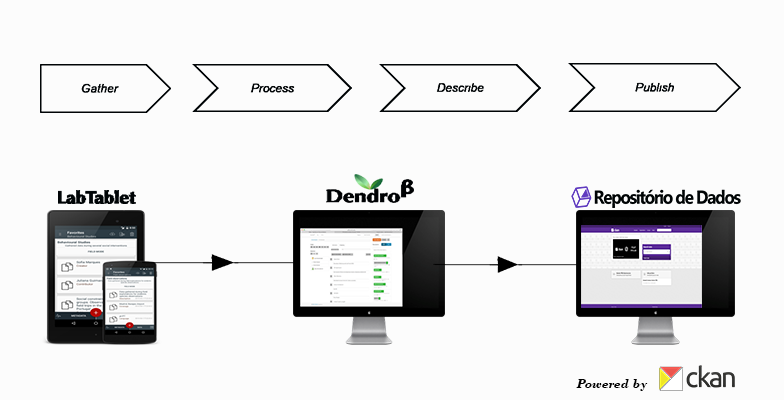
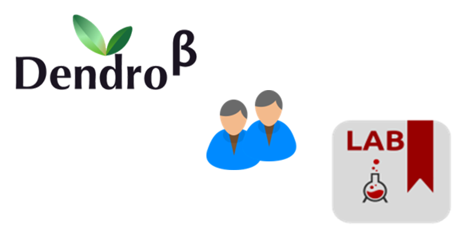
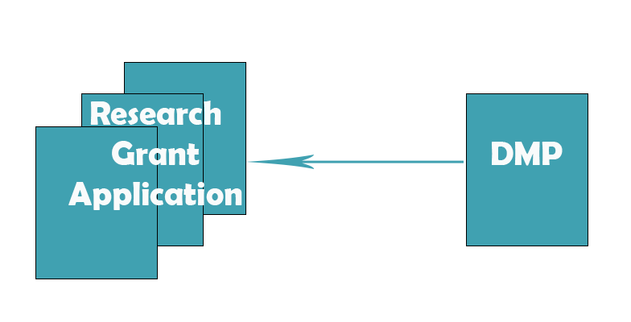
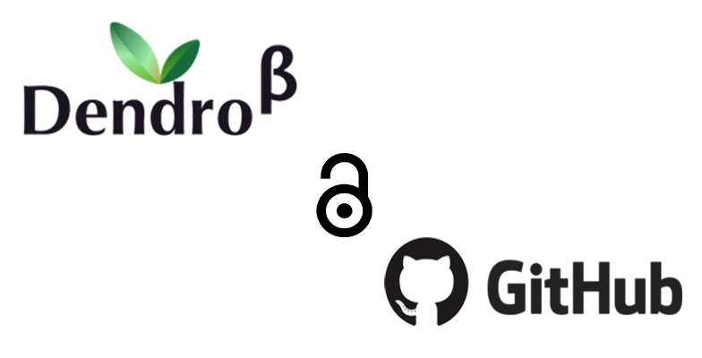

Assistant Professor at FEUP and a senior researcher at INESC TEC. Curent research interests are information retrieval, digital preservation and the management of research data.
RDM at UPorto
We are developing Research Data Management workflows and tools to support UPorto researchers.

RDM solutions
We are promoting collaborative RDM with Dendro and LabTablet.

Data Management Plans
We are working towards helping researchers comply with funder requirements

Open-source development
Our software is free and available on GitHub.

Current Staff
These are the people that focus on making Research Data Management an every-day routine for researchers
-

Cristina Ribeiro, PhD
Informatics Engineering, Information Science
-
Invited Assistant, Senior Dendro developer. Curent researcher interests are research data management, ontologies. Experiencied in Jvascript-MEAN Stack, PHP with MVC frameworks, Ruby on Rails, J2EE, etc.

João Rocha da Silva, PhD
Informatics Engineering
-
PhD Student in Digital Media at FEUP. His doctoral thesis is about engaging researchers in data description by using domain-specific metadata models.

João Aguiar Castro, PhD student
Information Science, Digital Media
-
Researcher at INESC TEC. Her current research interests are research data management, controlled vocabularies, regex, data description, metadata quality, software testing.

Yulia Karimova, MsC
Information Science
-
Passionate about mobile development and creating tools to assist with research data management and promote long term preservation.

Ricardo Amorim, MSC
Informatics Engineering
-
Assistant Professor at FEUP. Research interests in information retrieval, human computer interaction and information search behaviour.

Carla Teixeira Lopes, PhD
Informatics Engineering
-
Senior researcher at INESC TEC. Current research interests are e-Science Infrastructures, Large scale information systems, Geospatial Semantic Web and Semantic Sensor Web.

Artur Rocha, PhD Student
Informatics Engineering
-
Assistant Professor at FEUP and a senior researcher at INESC TEC. Curent research interests are e-Science, research data management and service-oriented architectures.

João C.Lopes, PhD
Informatics Engineering
-
Associate Professor at FEUP and senior researcher an INESC TEC. Current research interests are information management, digital preservation and databases.

Gabriel David, PhD
Informatics Engineering
-
Director of Digital University (UPdigital) at University of Porto. Research interests fall into the domain of computer networks and services: cloud computing, computer securty, etc.

Tito Vieira, MsC
Informatics Engineering
-
Information manager of UPdigital. The most recent publications focus on the open access policy of the University of Porto, its Institutional Repository and U.Porto Digital Archive.

Eugénia Fernandes, MsC
Documentary, Information Science
-
IT Coordinator - Information System Infrastructures in the University of Porto - Digital University (UPdigital). Current interests are technology and computer engineering.

José António Sousa, MsC
Computers Engineering, Inf. Management
-
Research interests focus are in the development of methods and tools for understanding and intervening in the complex interactions and dynamics of the socio-ecological dimensions underlying high nature value farmlands and farming systems.

Ângela Lomba, PHD
Biodiversity, Ecosystems
-
Assistant Professor and researcher in ecology and natural resources at the University of Porto. His current research focuses on the drivers, processes and consequences of ecosystem and landscape change. He is also interested on the effects of data management on the quality of ecological research.

João Honrado, PhD
Biodiversity, Ecosystems
Copyright (c) 2016, UPorto, all rights reserved.
Template by Bootstrapious.
 .
.